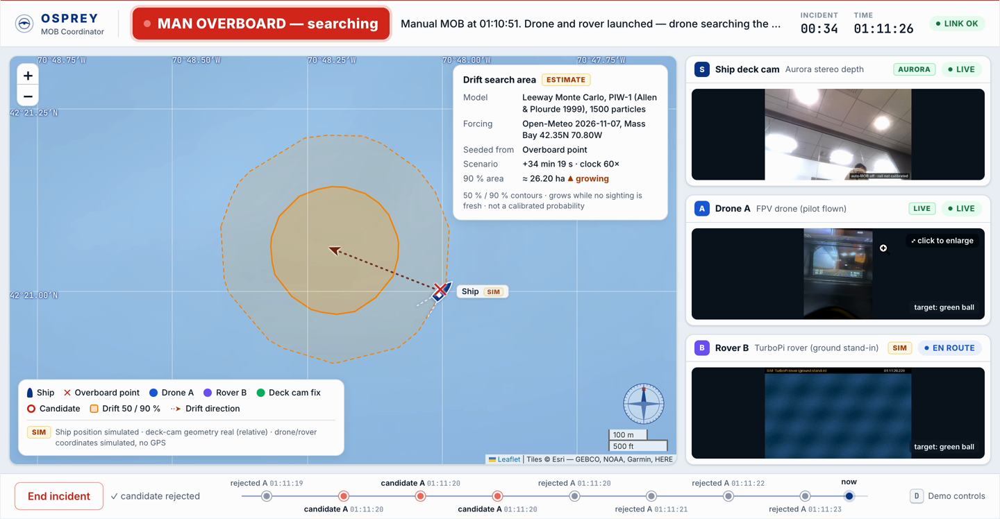

A ship's deck camera sees someone go over the rail and declares man overboard. Scouts search, the coordinator confirms the person, and the scouts lock on and follow. When comms drop or the person slips out of view, the coordinator's picture degrades honestly: last evidence with a ticking age, then a drift-driven search area.
Runs live in your browser. Press ▶ Play mission; drag to orbit, scroll to zoom. Scripted sightings, illustrative vehicles and compressed scenario time. The drift model uses Osprey's leeway ensemble and an archived Massachusetts Bay weather snapshot. The five-drone swarm and USV are the product vision; the physical prototype is a piloted drone plus a TurboPi rover.
Screen recording of the operational coordinator on the ground processor (Raspberry Pi 5 + Hailo-8) during a man-overboard incident: live deck camera and drone feeds, a drift search area that grows while there is no fresh sighting, and a timeline of candidates and rejections. Items marked SIM in the UI are simulated (ship position, rover coordinates); the drift area is an ESTIMATE, not a calibrated probability.
